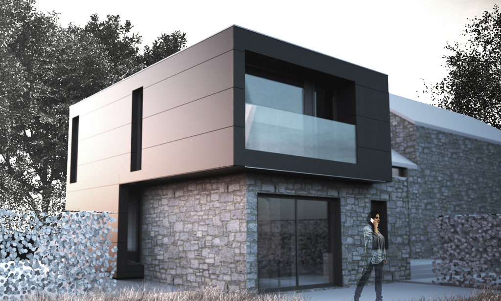
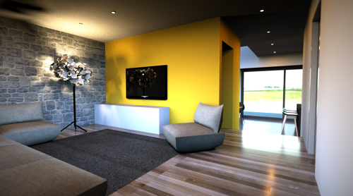
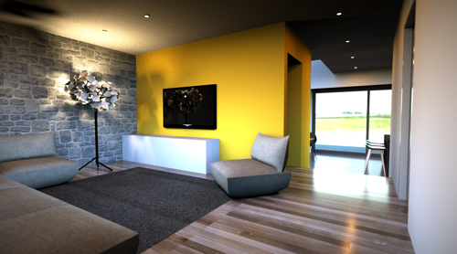
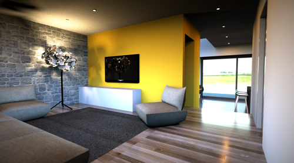

Découvrez notre projet d’architecture de réaménagement d’une maison rurale de type moderne en pierre bleu de pays
Un havre de paix
Le maitre d’ouvrage était désireux de bénéficier d’espaces de vie plus spacieux.
La nouvelle extension remplace l’annexe existante, en très mauvais état.

L’extension est un volume rectangulaire simple, d’un seul niveau. La façade arrière de l’annexe, étant actuellement partiellement enterrée, il a été décidé de couvrir celle-ci d’une toiture plate afin de permettre la création d’une baie horizontale au niveau du jardin. L’ensemble se distingue du volume principal grâce à la texture du parement. Néanmoins, le bardage en panneaux de fibre ciment de teinte gris anthracite rappelle la couleur des moellons de l’habitation existante tout en tranchant avec celle-ci.
Une terrasse sera créée au niveau de la façade latérale, orientée au Sud.

Le projet comprend également la création d’un centre d’esthétique qui prendra place au-dessus du garage existant (indépendant du volume principal), au même niveau que le rez-de-chaussée de l’habitation. Dans un souci d’harmonie, ce volume légèrement en porte-à-faux par rapport au garage, est également recouvert d’une toiture plate. Les matériaux utilisés pour la réalisation de celui-ci sont identiques à ceux utilisés pour l’annexe de l’habitation.
La rue étant relativement étroite et les possibilités de parking réduites, il a été décidé de conserver le garage existant et de créer deux emplacements extérieurs supplémentaires. La clientèle du centre d’esthétique pourra ainsi accéder facilement au bâtiment, tout en dégageant la voirie.
 
